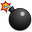
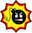
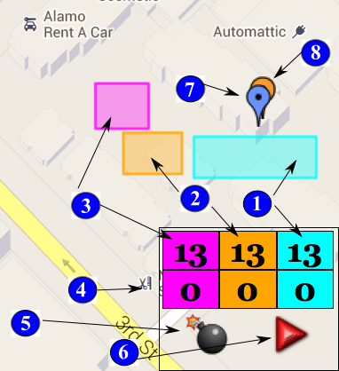

Objective
The object is to kill as many players
as quickly as possible.
Create Map
You create a location by clicking
'Start', then walking to the opposite
diagonal corner and clicking 'Stop'.
If you like the area you just walked-
off click 'Accept' to accept the area,
otherwise click 'Reject' and try again.
Once you have created 3 locations
you provide the map name and the
map is created.
Press your browser's back button to
return to the main menu.
Load Map
Load any previously created map by
providing the map name and your
player ID. You may use any number
as your player ID. If that player
ID is already playing in that map
you will need to try a different one.
Note if you leave a map you must start
over again with a different player ID.
To assemble a bomb you will need 3
bomb components; a case, a charge
and a detonator.
Each bomb requires one of each.
Once in a map you acquire bomb
components by standing in a
location (it will turn red when
you are inside it) for at least 13
seconds. You can see your bomb
component units and location
counters on the bottom right
hand corner of the screen.
You drop a bomb by walking to
where you want to drop the bomb
and pressing the  button
on the lower right.
Once you have dropped a bomb
you must arm it in order to
detonate it. You arm a bomb by
clicking the on the map. It will
change to the armed state . You
can dis-arm it by clicking it again.
You will see the icon change each
time you click it.
Once one or more bombs have been
armed you detonate them by
clicking the button.
If a person (including yourself) is near
a bomb when it goes off the person who
detonated the bomb will get a kill and
the person who was near the bomb
when it went off will get a hit.
The Winner
Who the winner is is up to you.
Be the first to 10 hits to win, or
after 10 minutes be the person with
the best hit to kill ratio or any
other combination.
Legend
The image below shows a typical map.
The objective of the game is to blow
up as many people as possible. You
blow up people by dropping bombs and
waiting for people to walk by them at
which point you can detonate your bomb
and blow them up.
Bombs require one case one charge and
one detonator. You acquire these items
as described below ...

(1)Case Factory and Cases Counters:
The cyan rectangle shows the location of the
cases factory where you go to get cases. The
lower right cyan counters show the time spent
in the case factory and the number of cases
you have acquired. To acquire cases, simply
stand in the case warehouse (it will turn red
when you are in it) and the timer will count
down to zero. Once the timer reaches zero you
will acquire another case. You will see the
lower counter increase. You may acquire as
many cases as you like.
(2)Charge Factory and Charges Counters:
The magenta rectangle shows the location of the
charge factory where you go to get charges. The
lower right magenta counters show the time spent
in the charge factory and the number of charges
you have acquired. To acquire charges, simply
stand in the charge warehouse (it will turn red
when you are in it) and the timer will count
down to zero. Once the timer reaches zero you
will acquire another charge. You will see the
lower counter increase. You may acquire as
many cases as you like.
(3)Detonator Factory and Detonator Counters:
The yellow rectangle shows the location of the
detonator factory where you go to get detonators. The
lower right yellow counters show the time spent
in the detonator factory and the number of detonators
you have acquired. To acquire detonators, you
stand in the detonator warehouse (it will turn red
when you are in it) and the timer will count
down to zero. Once the timer reaches zero you
will acquire another detonator. You will see the
lower counter increase. You may acquire as
many detonators as you like.
(4)Asset Counters:
The asset counters show how many of each asset
you have acquired. You acquire assets by standing
in the associated factory as described above.
(5)Drop Bomb:
Press this button to drop a bomb at your
current location. Note you must have at
least one case, one charge and one
detonator to drop a bomb.
(6)Fire Bomb:
Press this button to detonate all bombs
currently armed. Note you may fire one
or more bombs each time you click this
button.
(7)You:
The blue marker indicates your current
location.
(8)Enemies:
The orange markers show where other
players are currently located. You can
click on them to see their stats.
Main Menu